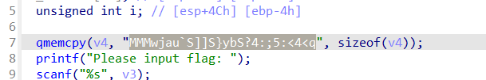
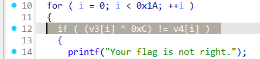
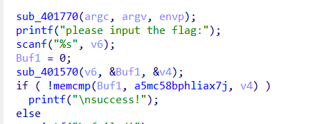

CTF101 REV Lab1¶
3240102120¶
Task1¶
课上用了四种参数，-E、-S、-c 和不加。
这里分别进行 gcc -E hello.c -o hello.c.i 、 gcc -S hello.c 、gcc -c hello.c 、gcc hello.c -o hello，可以分别得到 hello.c.i、hello.s、hello.o 和 hello.exe。
其中 .i 是预处理文件，里面堆了一堆 include 内容和一小点点的 int main，main 里面也没有进行处理。
.s 是汇编文件，就是刚才的程序的汇编版本，因为我本学期选修过汇编语言所以不再作熟悉工作。
.o 是编译文件，但是没有做链接。在 .o 里面，对 printf 的跳转地址是 0，所以理论上这个 .o 还不能执行。因此需要进一步进行链接。
最终的 hello 就是一个 elf 可执行文件，可以直接执行来输出 hello world! 。
Task2¶
IDA 是老朋友了，这里按要求回答问题：
功能：最重要的就是反汇编，把 elf 或者 pe 文件反汇编成汇编。其次就是反编译，把牛马都不乐意读的汇编给写成伪 C 代码，最起码读起来没汇编难受就是了。然后这里面还有几个功能比较好用，一个是汇编流程图，感觉这个功能救过我一命，之前有一次打也不哪道题的时候体会深刻，要是没流程图，我觉得我可能已经迷失在 jne 的海洋里了；另外一个就是 debug。总的来说功能很强大，能做到这种程度的软件真不多。
（后期补充一下：想起来什么时候用流程图了，当时和北京一哥们一块爆 classin，想实现一下防撤回，搞忘记是做什么了，他最开始拿到的内容是纯汇编，就是那一大坨一大坨的三元运算，在 jne 的海洋中徜徉了不知道多久，后来改用了流程图稍微清晰了点，最后把“小 A 撤回了一条消息”给魔改成了“小 A”，这个用户名逻辑说啥也没找到。这也是第一次汇编给我留下的心理阴影）
快捷键：GNU（不是
实用技巧倒是没有什么，就是可以优先看伪代码但是不能只看伪代码，有必要的时候要重命名一些奇妙小变量
gdb 比较新，我也是学了系统一和汇编之后才开始接触，不过因为之前 python 是主战场，也没少打断点查变量，所以对 gdb 的感觉就是命令行版的断点器。以下也是按盘回答问题。不过没有尝试 gef 和 pwndbg 插件，打算晚点再了解
- 打断点 b，可以跟行数也可以跟函数名，汇编里面可以跟 label，作用就是在这打断点，执行到这一步就停；
- 运行 r，就是运行程序
- 继续 c，跑程序到下一个断点
- 步进 n 或者 s，区别就是如果有函数调用，n 只调用不进函数体，s 直接执行函数体
- 执行到 until，如果是循环体就执行到跳出循环体，如果不是要跟行号，执行到行为止。
- 退出 q
Task3¶
exp2: 首先用 IDA 打开程序，能直接看到比较的内容：

再看比较方式是 flag 位异或 0xC 和那一串比，所以只要异或回来就行了


得到 flag。AAA{fmyl_QQ_qun_386796080}
exp3: 用 IDA 打开程序，可以看到逻辑是用 401570 函数比较的

追踪到 401570，可以看到逻辑一大串。大致看下来就是用来做 base64 编码的。所以实际上需要找的是一串存好的 base64 编码。返回 main 追踪 a5mc58bphliax7j 得到 db '5Mc58bPHLiAx7J8ocJIlaVUxaJvMcoYMaoPMaOfg15c475tscHfM/8=='。又因为是自定义符集编码，所以再追踪 aQvejafhmuyjbac 得到 'qvEJAfHmUYjBac+u8Ph5n9Od17FrICL/X0gVtM4Qk6T2z3wNSsyoebilxWKGZpRD'
有点懒得写脚本了，让 AI 替我写一个：
运行脚本就可以得到 flag：NSSCTF{a8d4347722800e72e34e1aba3fe914ae}